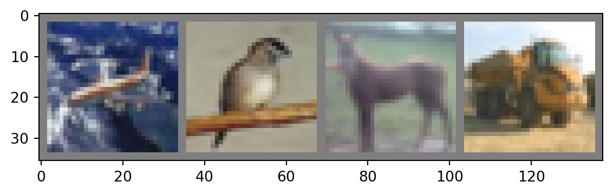
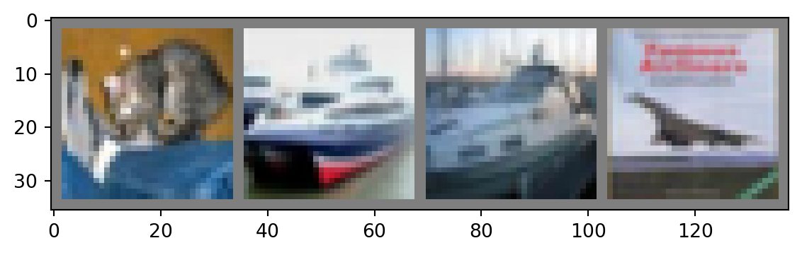

import torch
import torchvision
import torchvision.transforms as transforms
transform = transforms.Compose(
[transforms.ToTensor(),
transforms.Normalize((0.5, 0.5, 0.5), (0.5, 0.5, 0.5))])
batch_size = 4
trainset = torchvision.datasets.CIFAR10(root='./data',
train=True,
download=True,
transform=transform)
trainloader = torch.utils.data.DataLoader(trainset,
batch_size=batch_size,
shuffle=True,
num_workers=2)
testset = torchvision.datasets.CIFAR10(root='./data',
train=False,
download=True,
transform=transform)
testloader = torch.utils.data.DataLoader(testset,
batch_size=batch_size,
shuffle=False,
num_workers=2)
classes = ('plane', 'car', 'bird', 'cat',
'deer', 'dog', 'frog', 'horse', 'ship', 'truck')Overall workflow
The data
Create a DataLoader
A DataLoader is an iterable feeding data to a model at each iteration. The data loader sets the batch size, whether the data is shuffled or not, and how the I/O is parallelized.
Finally, the data often need to be transformed.
Visualize a sample of the data
Though not necessary, it can be useful to have a look at the data.
import matplotlib.pyplot as plt
import numpy as np
# functions to show an image
def imshow(img):
img = img / 2 + 0.5 # unnormalize
npimg = img.numpy()
plt.imshow(np.transpose(npimg, (1, 2, 0)))
plt.show()
# get some random training images
dataiter = iter(trainloader)
images, labels = next(dataiter)
# show images
imshow(torchvision.utils.make_grid(images))
# print labels
print(' '.join(f'{classes[labels[j]]:5s}' for j in range(batch_size)))
plane bird horse truckThe model
Architecture
First, we need to define the architecture of the network. There are many types of architectures. For images, CNN are well suited.
In Python, you can define a subclass of an existing class with:
class YourSubclass(BaseClass):
<definition of your subclass> The subclass is derived from the base class and inherits its properties. PyTorch contains the class torch.nn.Module which is used as the base class when defining a neural network.
import torch.nn as nn
import torch.nn.functional as F
class Net(nn.Module):
# Define the architecture of the network
def __init__(self):
super().__init__()
# 3 input image channel, 6 output channels,
# 5x5 square convolution kernel
self.conv1 = nn.Conv2d(3, 6, 5)
self.pool = nn.MaxPool2d(2, 2)
self.conv2 = nn.Conv2d(6, 16, 5)
# 5*5 from image dimension
self.fc1 = nn.Linear(16 * 5 * 5, 120)
self.fc2 = nn.Linear(120, 84)
self.fc3 = nn.Linear(84, 10)
# Set the flow of data through the network for the forward pass
# x represents the data
def forward(self, x):
# F.relu is the rectified-linear activation function
x = self.pool(F.relu(self.conv1(x)))
x = self.pool(F.relu(self.conv2(x)))
# flatten all dimensions except the batch dimension
x = torch.flatten(x, 1)
x = F.relu(self.fc1(x))
x = F.relu(self.fc2(x))
x = self.fc3(x)
return xLet’s create an instance of Net and print its structure:
net = Net()
print(net)Net(
(conv1): Conv2d(3, 6, kernel_size=(5, 5), stride=(1, 1))
(pool): MaxPool2d(kernel_size=2, stride=2, padding=0, dilation=1, ceil_mode=False)
(conv2): Conv2d(6, 16, kernel_size=(5, 5), stride=(1, 1))
(fc1): Linear(in_features=400, out_features=120, bias=True)
(fc2): Linear(in_features=120, out_features=84, bias=True)
(fc3): Linear(in_features=84, out_features=10, bias=True)
)Loss function and optimizer
We need to chose a loss function that will be used to calculate the gradients through backpropagation as well as an optimizer to do the gradient descent.
SGD with momentum has proved a very efficient optimizing technique and is widely used.
import torch.optim as optim
criterion = nn.CrossEntropyLoss()
optimizer = optim.SGD(net.parameters(), lr=0.001, momentum=0.9)Training
for epoch in range(2): # loop over the dataset twice
running_loss = 0.0
for i, data in enumerate(trainloader, 0):
# get the inputs; data is a list of [inputs, labels]
inputs, labels = data
# zero the parameter gradients
optimizer.zero_grad()
# forward + backward + optimize
outputs = net(inputs)
loss = criterion(outputs, labels)
loss.backward()
optimizer.step()
# print statistics
running_loss += loss.item()
if i % 2000 == 1999: # print every 2000 mini-batches
print(f'[{epoch + 1}, {i + 1:5d}] loss: {running_loss / 2000:.3f}')
running_loss = 0.0
print('Finished Training')[1, 2000] loss: 2.216[1, 4000] loss: 1.891[1, 6000] loss: 1.691[1, 8000] loss: 1.596[1, 10000] loss: 1.521[1, 12000] loss: 1.480[2, 2000] loss: 1.380[2, 4000] loss: 1.351[2, 6000] loss: 1.336[2, 8000] loss: 1.312[2, 10000] loss: 1.302[2, 12000] loss: 1.273Finished TrainingTesting
dataiter = iter(testloader)
images, labels = next(dataiter)
# print images
imshow(torchvision.utils.make_grid(images))
print('Real: ', ' '.join(f'{classes[labels[j]]:5s}' for j in range(4)))
Real: cat ship ship planeoutputs = net(images)
_, predicted = torch.max(outputs, 1)
print('Predicted: ', ' '.join(f'{classes[predicted[j]]:5s}'
for j in range(4)))Predicted: cat ship plane planecorrect = 0
total = 0
# since we're not training, we don't need to calculate the gradients for our outputs
with torch.no_grad():
for data in testloader:
images, labels = data
# calculate outputs by running images through the network
outputs = net(images)
# the class with the highest energy is what we choose as prediction
_, predicted = torch.max(outputs.data, 1)
total += labels.size(0)
correct += (predicted == labels).sum().item()
print(f'Accuracy of the network on the 10000 test images: {100 * correct // total} %')Accuracy of the network on the 10000 test images: 52 %# prepare to count predictions for each class
correct_pred = {classname: 0 for classname in classes}
total_pred = {classname: 0 for classname in classes}
# again no gradients needed
with torch.no_grad():
for data in testloader:
images, labels = data
outputs = net(images)
_, predictions = torch.max(outputs, 1)
# collect the correct predictions for each class
for label, prediction in zip(labels, predictions):
if label == prediction:
correct_pred[classes[label]] += 1
total_pred[classes[label]] += 1
# print accuracy for each class
for classname, correct_count in correct_pred.items():
accuracy = 100 * float(correct_count) / total_pred[classname]
print(f'Accuracy for class: {classname:5s} is {accuracy:.1f} %')Accuracy for class: plane is 71.5 %
Accuracy for class: car is 74.1 %
Accuracy for class: bird is 60.8 %
Accuracy for class: cat is 46.0 %
Accuracy for class: deer is 31.1 %
Accuracy for class: dog is 35.2 %
Accuracy for class: frog is 64.7 %
Accuracy for class: horse is 38.0 %
Accuracy for class: ship is 64.8 %
Accuracy for class: truck is 37.2 %